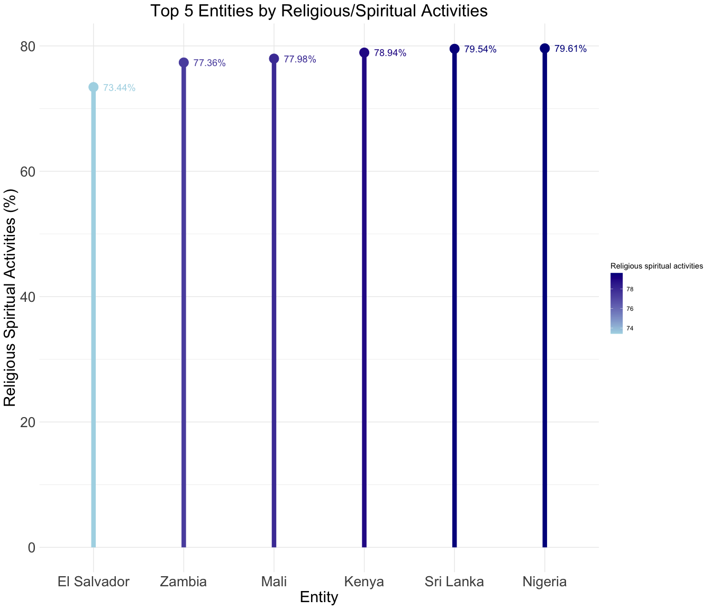

copingmethods
copingmethods.RmdAnalyzing Global Mental Health Trends with the copingmethods Package
The copingmethods package provides tools to explore mental health data focusing on depression rates across different age groups and coping mechanisms used in various countries. This vignette will walk you through the included datasets, explain the purpose of the app, and demonstrate how to use the launch_copingmethods() function to interactively explore the data.
Installation
To get started, make sure the package is installed and loaded in your R environment:
Install the package if it’s not already installed
remotes::install_github("ETC5523-2024/assignment-4-packages-and-shiny-apps-praj0022")
#> Using github PAT from envvar GITHUB_PAT. Use `gitcreds::gitcreds_set()` and unset GITHUB_PAT in .Renviron (or elsewhere) if you want to use the more secure git credential store instead.
#> Downloading GitHub repo ETC5523-2024/assignment-4-packages-and-shiny-apps-praj0022@HEAD
#> fs (1.6.4 -> 1.6.5 ) [CRAN]
#> digest (0.6.35 -> 0.6.37 ) [CRAN]
#> Rcpp (1.0.12 -> 1.0.13-1) [CRAN]
#> tinytex (0.51 -> 0.54 ) [CRAN]
#> xfun (0.44 -> 0.49 ) [CRAN]
#> highr (0.10 -> 0.11 ) [CRAN]
#> evaluate (0.23 -> 1.0.1 ) [CRAN]
#> rmarkdown (2.28 -> 2.29 ) [CRAN]
#> knitr (1.46 -> 1.49 ) [CRAN]
#> sys (3.4.2 -> 3.4.3 ) [CRAN]
#> askpass (1.2.0 -> 1.2.1 ) [CRAN]
#> curl (5.2.3 -> 6.0.0 ) [CRAN]
#> commonmark (1.9.1 -> 1.9.2 ) [CRAN]
#> crayon (1.5.2 -> 1.5.3 ) [CRAN]
#> data.table (1.15.4 -> 1.16.2 ) [CRAN]
#> Installing 15 packages: fs, digest, Rcpp, tinytex, xfun, highr, evaluate, rmarkdown, knitr, sys, askpass, curl, commonmark, crayon, data.table
#> Installing packages into '/private/var/folders/mv/bhgkq2ns75sf84kzz32njn980000gn/T/RtmpiPPyeU/temp_libpath7db13cdb7ce2'
#> (as 'lib' is unspecified)
#>
#> The downloaded binary packages are in
#> /var/folders/mv/bhgkq2ns75sf84kzz32njn980000gn/T//RtmpnLJDj8/downloaded_packages
#> ── R CMD build ─────────────────────────────────────────────────────────────────
#> * checking for file ‘/private/var/folders/mv/bhgkq2ns75sf84kzz32njn980000gn/T/RtmpnLJDj8/remotes81c0c51d421/ETC5523-2024-assignment-4-packages-and-shiny-apps-praj0022-1782c45/DESCRIPTION’ ... OK
#> * preparing ‘copingmethods’:
#> * checking DESCRIPTION meta-information ... OK
#> * checking for LF line-endings in source and make files and shell scripts
#> * checking for empty or unneeded directories
#> NB: this package now depends on R (>= 3.5.0)
#> WARNING: Added dependency on R >= 3.5.0 because serialized objects in
#> serialize/load version 3 cannot be read in older versions of R.
#> File(s) containing such objects:
#> ‘copingmethods/vignettes/copingmethods_cache/html/unnamed-chunk-6_95e6411719133eace1c24e22ce2d5a3b.RData’
#> ‘copingmethods/vignettes/copingmethods_cache/html/unnamed-chunk-6_95e6411719133eace1c24e22ce2d5a3b.rdx’
#> ‘copingmethods/vignettes/copingmethods_cache/html/unnamed-chunk-7_22675ec2b2a618749ddd61a70ef1e549.RData’
#> ‘copingmethods/vignettes/copingmethods_cache/html/unnamed-chunk-7_22675ec2b2a618749ddd61a70ef1e549.rdx’
#> * building ‘copingmethods_1.0.0.tar.gz’
#> Warning in utils::tar(filepath, pkgname, compression = compression, compression_level = 9L, :
#> storing paths of more than 100 bytes is not portable:
#> ‘copingmethods/vignettes/copingmethods_cache/html/unnamed-chunk-6_95e6411719133eace1c24e22ce2d5a3b.RData’
#> Warning in utils::tar(filepath, pkgname, compression = compression, compression_level = 9L, :
#> storing paths of more than 100 bytes is not portable:
#> ‘copingmethods/vignettes/copingmethods_cache/html/unnamed-chunk-6_95e6411719133eace1c24e22ce2d5a3b.rdb’
#> Warning in utils::tar(filepath, pkgname, compression = compression, compression_level = 9L, :
#> storing paths of more than 100 bytes is not portable:
#> ‘copingmethods/vignettes/copingmethods_cache/html/unnamed-chunk-6_95e6411719133eace1c24e22ce2d5a3b.rdx’
#> Warning in utils::tar(filepath, pkgname, compression = compression, compression_level = 9L, :
#> storing paths of more than 100 bytes is not portable:
#> ‘copingmethods/vignettes/copingmethods_cache/html/unnamed-chunk-7_22675ec2b2a618749ddd61a70ef1e549.RData’
#> Warning in utils::tar(filepath, pkgname, compression = compression, compression_level = 9L, :
#> storing paths of more than 100 bytes is not portable:
#> ‘copingmethods/vignettes/copingmethods_cache/html/unnamed-chunk-7_22675ec2b2a618749ddd61a70ef1e549.rdb’
#> Warning in utils::tar(filepath, pkgname, compression = compression, compression_level = 9L, :
#> storing paths of more than 100 bytes is not portable:
#> ‘copingmethods/vignettes/copingmethods_cache/html/unnamed-chunk-7_22675ec2b2a618749ddd61a70ef1e549.rdx’
#> Installing package into '/private/var/folders/mv/bhgkq2ns75sf84kzz32njn980000gn/T/RtmpiPPyeU/temp_libpath7db13cdb7ce2'
#> (as 'lib' is unspecified)Load the package
library(copingmethods)Datasets Included in the Package
The copingmethods package includes two datasets:
depression_age: This dataset provides annual data on depression rates for different age groups across countries, from 1990 to 2019. It allows for an analysis of trends in age-specific depression rates over time.
percent_copingmethods: This dataset contains information on the percentage usage of various coping methods reported by individuals across countries, specifically for the year 2020. This data is useful for comparing how different countries approach mental health management. Example: Loading and Exploring the Datasets You can preview the structure of these datasets as follows:
View the first few rows of the depression_age dataset
head(depression_age, 2)
#> Entity Code Year Age_5_14 Age_15_19 Age_20_24 Age_25_29 Age_30_34
#> 1 Afghanistan AFG 1990 0.9059628 4.347563 6.074801 6.706133 7.296537
#> 2 Afghanistan AFG 1991 0.8796905 4.309884 6.051823 6.645131 7.276406
#> Age_35_39 Age_40_44 Age_45_49 Age_50_54 Age_55_59 Age_60_64 Age_65_69
#> 1 8.066108 8.366741 7.965051 7.506240 7.047010 6.614255 6.235099
#> 2 8.080511 8.417283 7.970613 7.518521 7.069068 6.611909 6.224764
#> Age_70 All_Ages Age_Standardised
#> 1 5.584506 3.851845 4.996118
#> 2 5.582696 3.804602 4.989290View the first few rows of the percent_copingmethods dataset
head(percent_copingmethods, 2)
#> Entity Code Year Religious spiritual activities
#> 1 Africa 2020 63.71511
#> 2 Albania ALB 2020 36.17760
#> Improved healthy lifestyle behaviors Made a change to work situation
#> 1 66.22646 47.92869
#> 2 67.71693 39.66084
#> Made a change to personal relationships Talked to friends or family
#> 1 63.70457 79.29015
#> 2 54.19250 86.52499
#> Took prescribed medication Spent time in nature
#> 1 39.97995 55.85796
#> 2 40.89743 88.64183
#> Talked to mental health professional
#> 1 25.93776
#> 2 34.49906depression_age Dataset Structure
The depression_age dataset includes the following columns:
- Entity: The country or region where the data was collected.
- Code: Country Code.
- Year: The year the data was collected.
- Age Groups (e.g., Age_5_14, Age_15_19, etc.): The percentage of people in each age group who reported experiencing depression.
Each row represents the depression percentages for various age groups in a given country and year.
Example Usage
To see the depression rates for a specific country and year:
# Filter for data from Andorra in 2019
andorra_2019 <- depression_age |>
filter(Entity == "Andorra", Year == "2019")
print(andorra_2019)
#> Entity Code Year Age_5_14 Age_15_19 Age_20_24 Age_25_29 Age_30_34 Age_35_39
#> 1 Andorra AND 2019 0.9819055 3.591458 4.43514 4.594962 4.751013 5.09585
#> Age_40_44 Age_45_49 Age_50_54 Age_55_59 Age_60_64 Age_65_69 Age_70 All_Ages
#> 1 5.248908 5.268317 5.307462 5.326445 5.280425 5.142392 4.900389 4.434062
#> Age_Standardised
#> 1 3.607207percent_copingmethods Dataset Structure
The percent_copingmethods dataset contains the following columns:
- Entity: The country or region where the data was collected.
- Code: Country code.
- Year: The year of data collection (2020).
- Coping Method Columns (e.g., Religious spiritual activities, Improved healthy lifestyle behaviors, etc.): The percentage of respondents who reported using each coping method.
Each row represents the percentage usage of different coping methods in a given country.
Example Usage
To see the top coping methods used in a specific country, such as Brazil:
# Filter for Brazil in 2020
brazil_coping <- percent_copingmethods |>
filter(Entity == "Brazil")
print(brazil_coping)
#> Entity Code Year Religious spiritual activities
#> 1 Brazil BRA 2020 53.72946
#> Improved healthy lifestyle behaviors Made a change to work situation
#> 1 72.57038 51.04526
#> Made a change to personal relationships Talked to friends or family
#> 1 74.34573 71.42405
#> Took prescribed medication Spent time in nature
#> 1 44.71939 64.1756
#> Talked to mental health professional
#> 1 46.25562Visualizing Top Coping Methods Using ggplot2
As an example, let’s create a plot that shows the top five entities based on their use of “Religious spiritual activities” as a coping method.
library(ggplot2)
# `topfive`
topfive <- percent_copingmethods |>
arrange(desc(`Religious spiritual activities`)) |>
head()
# Create the plot
ggplot(topfive, aes(x = reorder(Entity, `Religious spiritual activities`),
y = `Religious spiritual activities`,
color = `Religious spiritual activities`)) +
geom_segment(aes(y = 0,
yend = `Religious spiritual activities`,
x = Entity,
yend = Entity),
linewidth = 3) + # Line from y-axis to point
geom_point(size = 6) + # Point at the end of each line
geom_text(aes(label = paste0(round(`Religious spiritual activities`, 2), "%")),
hjust = -0.3, size = 4.8) +
scale_color_gradient(low = "lightblue", high = "darkblue") + # Gradient from light to dark blue
labs(y = "Religious Spiritual Activities (%)",
x = "Entity",
title = "Top 5 Entities by Religious/Spiritual Activities") +
theme_minimal() +
theme(
plot.title = element_text(hjust = 0.5, size = 24 ), # Center and resize title
axis.title.y = element_text(size = 22), # Adjust x-axis label size
axis.title.x = element_text(size = 22), # Adjust y-axis label size
axis.text.y = element_text(size = 20), # Adjust x-axis text size
axis.text.x = element_text(size = 20) # Adjust y-axis text size
)
#> Warning: Duplicated aesthetics after name standardisation: yend
#> Duplicated aesthetics after name standardisation: yend
This plot shows the top five entities that reported the highest percentages for “Religious spiritual activities” as a coping mechanism. Each bar represents an entity, with a gradient color indicating the level of usage.
Launching the Interactive Shiny App with launch_copingmethods()
The copingmethods package provides an interactive Shiny application to help users explore mental health trends. The app can be launched using the launch_copingmethods() function, which opens a user-friendly interface to visualize and compare data.
Function Description: launch_copingmethods()
The launch_copingmethods() function starts the Shiny app included in the package. The app provides interactive visualizations of mental health trends, allowing users to analyze depression rates across age groups and compare coping methods used by different countries.
Arguments: This function takes no arguments.
Return Value: The function does not return a value but instead launches the Shiny app in your default web browser.
Example Usage:
# Launch the Shiny app to explore the datasets interactively
launch_copingmethods()App Features
The app has two main sections for analyzing data:
1. Depression by Age Analysis
In this section, you can view depression rates across different age groups in a selected country and compare rates between two years.
Steps to Use the Depression by Age Analysis:
- Select the “Depression by Age” option under “Select Analysis Type”.
- Choose a Country/Entity from the dropdown list.
- (Optional) Check “Show Average for All Entities” to display a dashed line representing the average depression rate across all countries in the selected year.
- Use the Year slider to select two years for comparison.
Outputs:
- Bar Chart: A bar chart displays depression percentages for each age group in the selected country and year. If “Show Average” is selected, a dashed line shows the average rate.
- Difference Table: A table shows the change in depression percentage for each age group from the start year to the selected year.
2. Coping Methods Comparison
This section allows you to compare the top coping methods between two countries.
Steps to Use the Coping Methods Comparison:
- Select the “Coping Methods Comparison” option under “Select Analysis Type”.
- Choose two Countries to compare (or choose “None” for one to view data for only one country).
- Adjust the Number of Top Coping Methods to display between 1 and 8.
Outputs:
- Bar Chart: A bar chart showing the top coping methods for the selected countries, allowing visual comparison.
Troubleshooting
If you encounter issues while using the copingmethods
package or launching the Shiny app, the following tips may help resolve
common problems.
1. Shiny App Does Not Launch with launch_copingmethods()
Problem: When running launch_copingmethods(), the app does not open, and you may see an error message like:
“Could not find the Shiny app directory. Try re-installing copingmethods.”
Solution:
Ensure the copingmethods package is correctly installed. Try reinstalling the package if necessary:
Reinstall copingmethods package
# Reinstall copingmethods package
remotes::install_github("ETC5523-2024/assignment-4-packages-and-shiny-apps-praj0022")Verify that your copingmethods package installation includes the Shiny app files. If the problem persists, consider re-installing the package and check for any installation errors.
2. Error: “object not found” for depression_age or percent_copingmethods
Problem: You may encounter errors related to
depression_age or percent_copingmethods not
being found when running examples or visualizations.
Solution:
Ensure that the datasets are loaded correctly from the package. The datasets should be accessed directly from the copingmethods package namespace:
library(copingmethods)
data("depression_age", package = "copingmethods")
data("percent_copingmethods", package = "copingmethods")If this does not resolve the issue, re-install the package, as the data files might be missing or corrupted.
3. Warning: “The value argument of names<-() must have the same length as x”
Problem: This warning might appear when manipulating datasets with the names() function in dplyr or tidyverse.
Solution:
This warning indicates a mismatch in the length of names being
assigned to a data frame or vector. Check your code for assignments
where names() or column renaming is performed, ensuring the
number of names matches the columns or values.
4. Shiny App Display Issues or Layout Problems
Problem: The app layout may look misaligned, or components may not render correctly, especially if you see warnings about bs_theme or other layout settings.
Solution:
Try clearing your browser cache or opening the app in a different browser. Occasionally, old cached styles can interfere with the display of updated content.
If layout issues persist, try running runApp() in
RStudio with a clean session:
library(copingmethods)
launch_copingmethods()5. Error Messages in ggplot2 or plotly Visualizations
Problem: Errors related to visualizations, such as “object not found” or unexpected behaviors in the plot.
Solution:
Double-check that the necessary libraries (ggplot2, plotly, etc.) are loaded. If the problem is specific to the Shiny app, ensure that the latest versions of these libraries are installed.
install.packages("ggplot2")
install.packages("plotly")Inspect any filter() or pivot_longer()
steps in the code to ensure the correct variable names and data
structures are used. Errors often occur if columns referenced in the
code don’t match the dataset.
6. Issues with bslib or bs_theme Settings
Problem: Theme issues, such as font not displaying or color themes
not applying correctly, can arise from bslib.
Solution:
Make sure bslib is installed and updated. You can
install or update it using:
install.packages("bslib")If the theme still does not apply correctly, try adjusting theme settings in your code and ensuring the required fonts are available. Some fonts may require an active internet connection to load correctly.
If you continue to experience issues after trying these solutions, consult the documentation for shiny, ggplot2, or other relevant packages, or seek help from the R community on forums like Stack Overflow or RStudio Community.
Overview
This guide provides an overview of the functionalities in the
copingmethods package, including dataset exploration,
plotting examples, and an interactive Shiny app for comprehensive mental
health data analysis. Users can visualize and compare coping methods and
depression trends across various age groups and countries, making it a
valuable tool for exploring global mental health trends. Additionally, a
troubleshooting section is included to address common installation,
loading, and visualization issues, ensuring a smooth experience while
using the package.